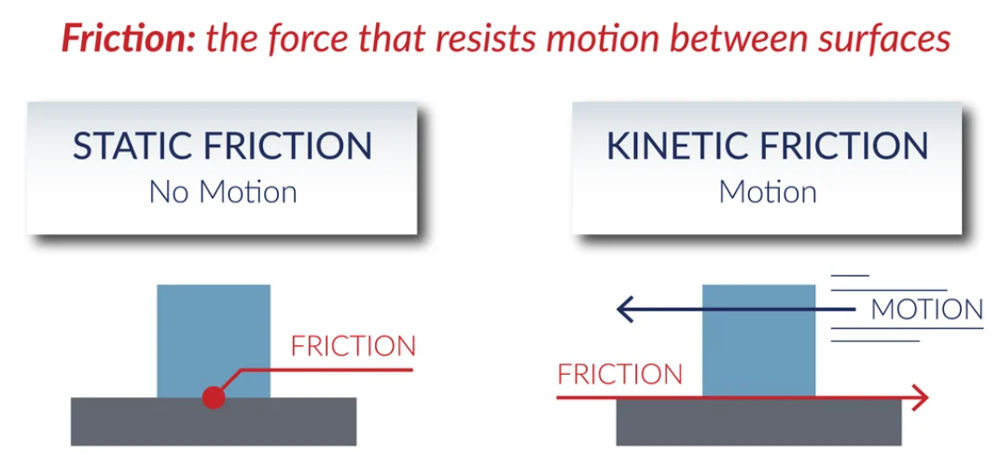

Friction is a resistive force that opposes the relative motion or attempted motion between two surfaces in contact. In AP Physics C, understanding the difference between static and kinetic friction is crucial.
Static friction prevents an object from moving. It adjusts up to a maximum value:
\( f_s \leq \mu_s N \)
where \( \mu_s \) is the coefficient of static friction and \( N \) is the normal force. If the applied force exceeds this maximum, the object begins to move.
Once an object is sliding, kinetic friction takes over. It has a constant magnitude:
\( f_k = \mu_k N \)
where \( \mu_k \) is the coefficient of kinetic friction. It is typically smaller than \( \mu_s \).
Friction always acts parallel to the surface and opposite to motion (or attempted motion). It depends on the normal force, not the contact area.
Which of the following statements is true?